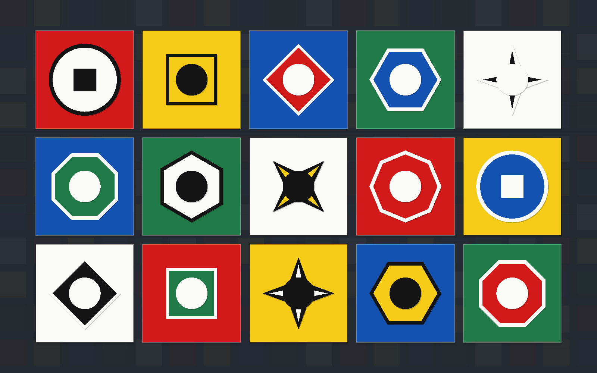
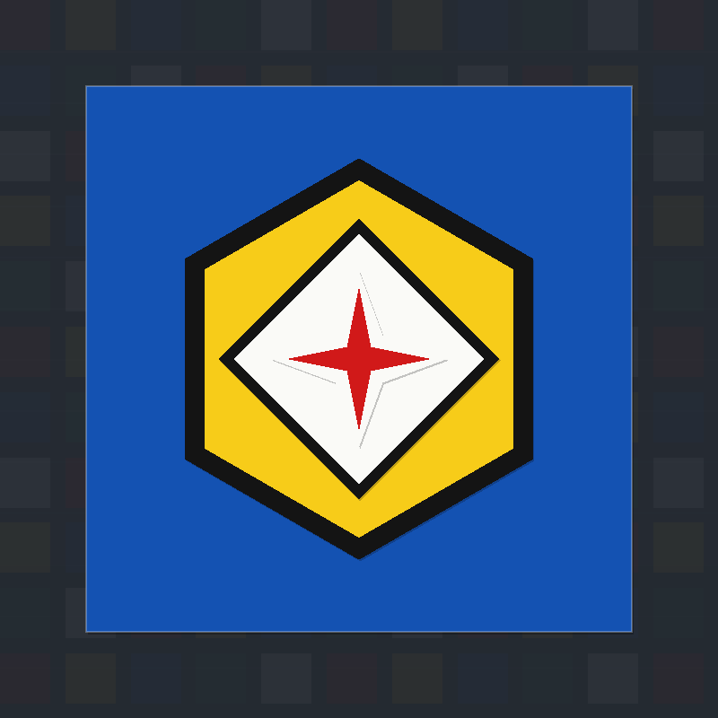
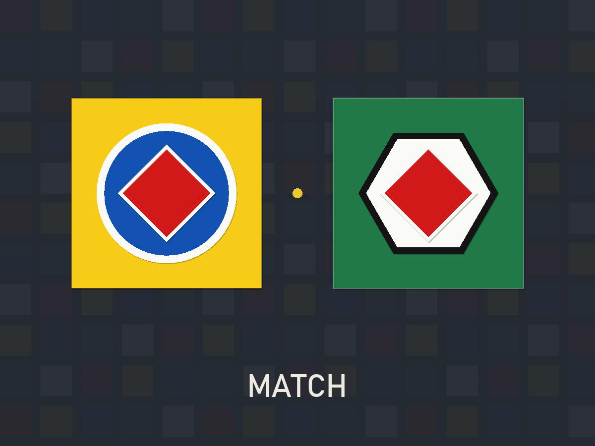
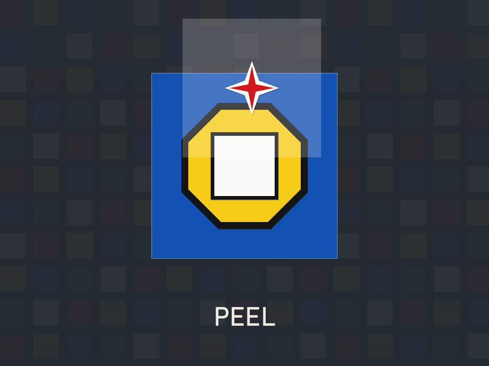
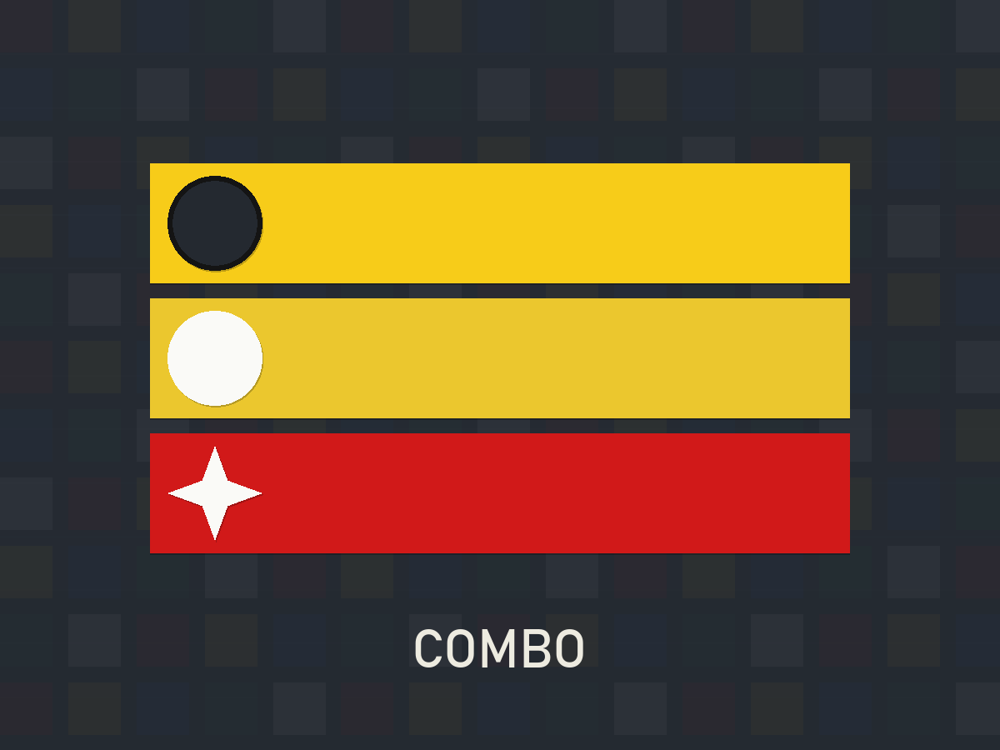
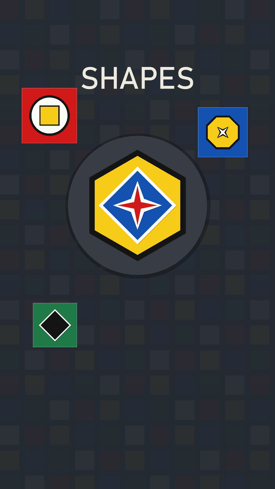

Shapes
Match a shape. Peel a layer.
Build combos.
In development — not yet released.
Shapes is the second puzzle game from geeks0n-byte, being built in the Godot engine by the same solo developer who made Spaceblox. Where Spaceblox is about slow, careful deduction, Shapes is more tactile: a board of layered tiles that you peel apart one match at a time.
This page describes how the current prototype plays. Shapes is still in development, so rules, art and features can change before it is released, and there is no download yet. This page will be updated as the game takes shape.
What is Shapes?
Every tile on the Shapes board is a small stack: a colored base with several shape layers on top of it, from back to front. Two tiles "match" when they share a shape. When you match them, the shared layer peels off both tiles and reveals whatever is underneath. A tile is cleared when all of its layers are gone, and a round is won when the whole board is clear.
The idea is a puzzle that feels good in the hand: quick taps, satisfying peels, and a board that slowly opens up as you dig through it.
How the prototype plays
- Tap a tile to select it.
- Tap a second tile that shares a shape with the first. The shared shape peels off both tiles.
- Keep going. After a successful match, the second tile stays selected, so you can immediately look for its next partner. Every match in a row adds to your combo.
- Avoid misses. Tapping a tile that shares nothing with your selection counts as a move and resets the combo to zero.
- Change your mind. Tap the selected tile again to deselect it, or use Undo to step back.
- Clear the board. When every tile has been peeled away, the round ends.
In the prototype, longer combo chains are rewarded and clearing the board at a good pace helps your score. A hint can point out a possible match when you are stuck, and the game calls out "Streak" and "Hot" as your combo grows.
Preview
Early prototype art, not final screenshots.






Tips for the prototype
- Think in chains, not pairs. Because the second tile stays selected after a match, prefer a match whose second tile has another obvious partner.
- Read the front layer. The shape on top is what you can match next. Peeling it may reveal a shape that links to a different part of the board.
- Don't panic-tap. A miss breaks your combo, so pause and scan the board before you tap.
How Shapes relates to Spaceblox
Both are calm, single-player puzzles made by one developer, but they play very differently. Spaceblox is a logic grid where you work out every color from a few clear rules. Shapes is a matching game about spotting shared shapes and planning chains of matches. If you enjoy one, the other offers a different kind of puzzle.
FAQ
Can I play Shapes now?
Not yet. Shapes is in development and has not been released. In the meantime, you can play Spaceblox in your browser.
Will the rules change?
Possibly. Everything on this page describes the current prototype, and details may change during development.
How do I hear about updates?
Check the devlog and this page, which will be updated as development continues.